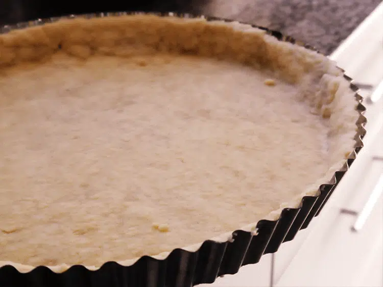
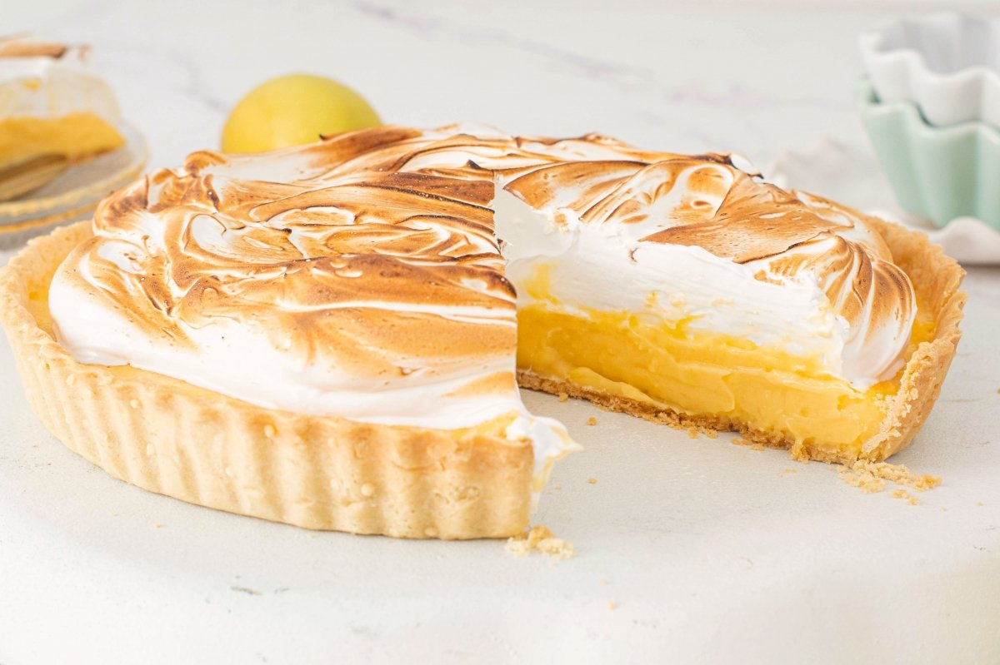
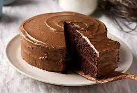
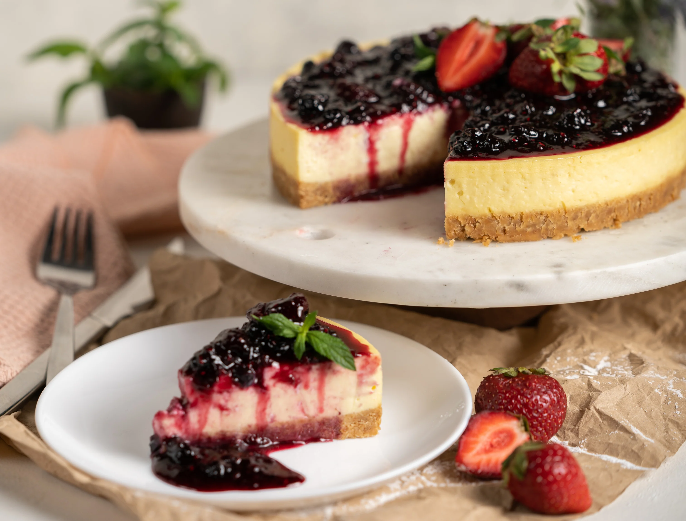
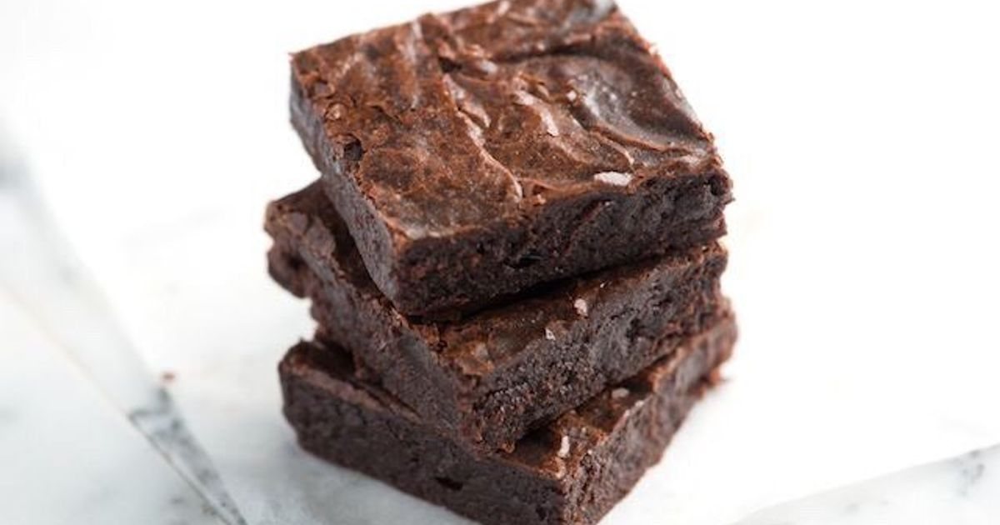
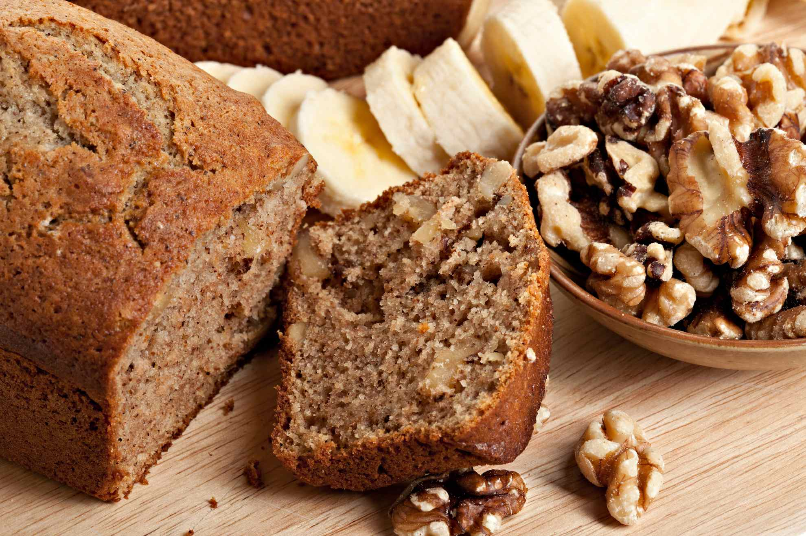
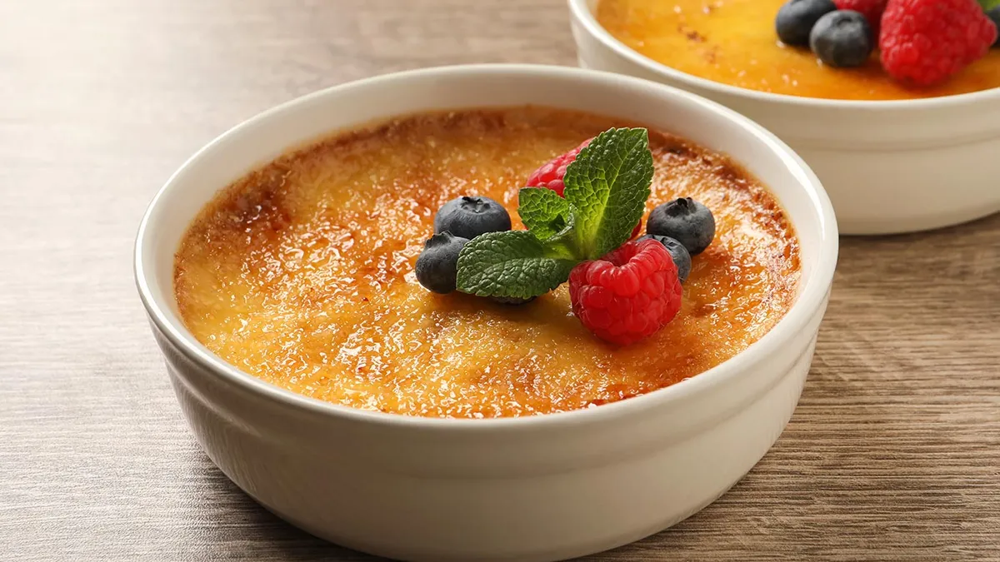

La tarta de manzana definitiva: una corteza de masa quebrada
hecha con mantequilla de alta
calidad que se deshace en la boca, combinada con un relleno de manzanas caramelizadas con toques
de canela de Ceylán y vaina de vainilla. Una receta **clásica elevada** a la perfección.
Prep. Cocción Porciones 8
⭐⭐⭐⭐⭐
4.9
de 5 (125 votos)
¿Te gustó la receta? ¡Califícala!
Instrucciones Paso a Paso
1. Preparar la Masa Quebrada
En un bol grande, mezcla la harina y el azúcar. Añade la
mantequilla fría en cubos y trabaja la mezcla con los dedos hasta obtener una
textura de arena gruesa (arenado).
Añade el huevo y el agua fría. Amasa lo justo para que se una. Envuelve la masa
en film y refrigera por 30 minutos.

2. Preparar el Relleno
Pela, descorazona y corta las manzanas en láminas finas. Colócalas en un bol con el
azúcar moreno, la canela, la vainilla y el zumo de limón. Mezcla bien y deja
reposar.
3. Ensamblar y Hornear
Precalienta el horno a 180°C (350°F). Estira dos tercios de la masa y cubre un
molde. Rellena con las manzanas. Con el tercio restante, haz una rejilla o una tapa
simple. Hornea durante 50-60 minutos o hasta que la masa esté dorada y el relleno
burbujee.
Notas del Chef
Para una masa más crujiente, sustituye un poco del agua por vodka frío. Esto evita que el
gluten se desarrolle demasiado. Si quieres un brillo perfecto, barniza la rejilla con
huevo batido justo antes de hornear.
Video Guía de la Masa
Otras Recetas de Postres que Amamos 🍰

PostreMedia
Tarta de Limón y Merengue
El equilibrio perfecto entre ácido y dulce. Un postre
elegante.
⏱ 60 min⭐ 4.7
Ver Receta →

PostreDifícil
Tarta Selva Negra Clásica
Capas de bizcocho de chocolate, cerezas y crema. Ideal para
expertos.
⏱ 90 min⭐ 4.9
Ver Receta →

PostreFácil
Cheesecake Cremoso al Horno
Base de galleta crujiente y un relleno de queso
increíblemente suave.
⏱ 120 min⭐ 4.5
Ver Receta →

PostreFácil
Brownies Fudge (Doble Chocolate)
Máxima intensidad de cacao. Perfectos, húmedos y con corteza
brillante.
⏱ 45 min⭐ 4.8
Ver Receta →
Postre FríoFácil
Mousse de Mango y Maracuyá
Un postre sin horno, ligero y tropical. Ideal para el
verano.
⏱ 30 min⭐ 4.6
Ver Receta →

PanaderíaMedia
Pan de Plátano Húmedo y Rústico
El mejor uso para esos plátanos maduros. Con trozos de nuez
y canela.
⏱ 75 min⭐ 4.8
Ver Receta →
ReposteríaFácil
Alfajores de Maicena y Dulce de Leche
La galleta argentina que se derrite en la boca. Sabor a
tradición.
⏱ 50 min⭐ 5.0
Ver Receta →

Postre FrancésDifícil
Crème Brûlée Clásica con Vainilla
Postre sofisticado con una crema sedosa y un crujiente de
caramelo.